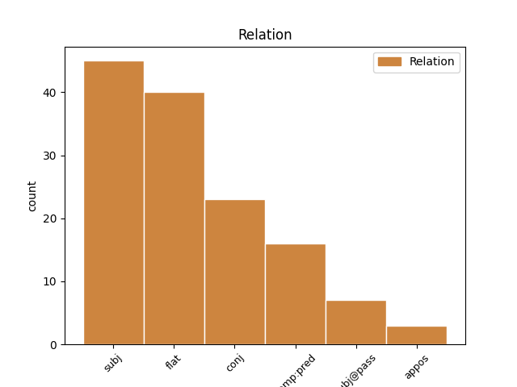
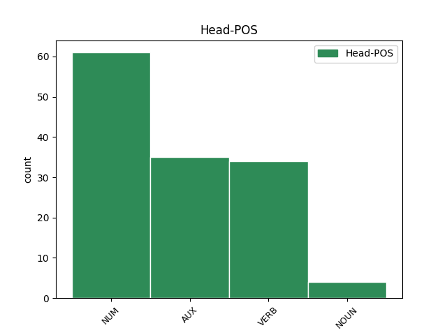
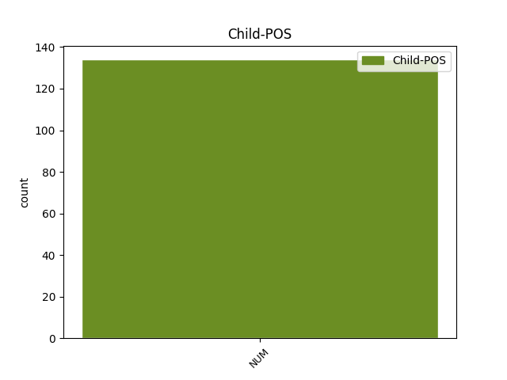

Distribution of features within this leaf



Agreement Rules sorted by frequency.
- When the dependent token is the subject(subj) of the head token, and the dependent token is NUM.
1 Шестима шестима NUM Mc-pi Definite=Ind|Number=Plur|NumType=Card 2 subj _ _
2 са съм AUX Vxitf-r3p Aspect=Imp|Mood=Ind|Number=Plur|Person=3|Tense=Pres|VerbForm=Fin|Voice=Act 0 _ _ _
3 в _ _ _ _ 0 _ _ _
4 критично _ _ _ _ 0 _ _ _
5 състояние _ _ _ _ 0 _ _ _
6 , _ _ _ _ 0 _ _ _
7 заявиха _ _ _ _ 0 _ _ _
8 от _ _ _ _ 0 _ _ _
9 болницата _ _ _ _ 0 _ _ _
10 в _ _ _ _ 0 _ _ _
11 мадридския _ _ _ _ 0 _ _ _
12 квартал _ _ _ _ 0 _ _ _
13 Артуро _ _ _ _ 0 _ _ _
14 Сориа _ _ _ _ 0 _ _ _
15 , _ _ _ _ 0 _ _ _
16 където _ _ _ _ 0 _ _ _
17 е _ _ _ _ 0 _ _ _
18 станал _ _ _ _ 0 _ _ _
19 атентатът _ _ _ _ 0 _ _ _
20 . _ _ _ _ 0 _ _ _
1 Само _ _ _ _ 0 _ _ _
2 за _ _ _ _ 0 _ _ _
3 първите _ _ _ _ 0 _ _ _
4 6 _ _ _ _ 0 _ _ _
5 месеца _ _ _ _ 0 _ _ _
6 на _ _ _ _ 0 _ _ _
7 тази _ _ _ _ 0 _ _ _
8 година _ _ _ _ 0 _ _ _
9 са _ _ _ _ 0 _ _ _
10 съставени _ _ _ _ 0 _ _ _
11 471 _ _ _ _ 0 _ _ _
12 акта _ _ _ _ 0 _ _ _
13 на _ _ _ _ 0 _ _ _
14 обща _ _ _ _ 0 _ _ _
15 стойност _ _ _ _ 0 _ _ _
16 240 240 NUM Mc-pi Definite=Ind|Number=Plur|NumType=Card 0 _ _ _
17 000 000 NUM Mc-pi Definite=Ind|Number=Plur|NumType=Card 16 flat _ _
18 лева _ _ _ _ 0 _ _ _
19 . _ _ _ _ 0 _ _ _
1 Според _ _ _ _ 0 _ _ _
2 изчисленията _ _ _ _ 0 _ _ _
3 на _ _ _ _ 0 _ _ _
4 Международното _ _ _ _ 0 _ _ _
5 астрономическо _ _ _ _ 0 _ _ _
6 дружество _ _ _ _ 0 _ _ _
7 диаметърът _ _ _ _ 0 _ _ _
8 на _ _ _ _ 0 _ _ _
9 новооткритото _ _ _ _ 0 _ _ _
10 небесно _ _ _ _ 0 _ _ _
11 тяло _ _ _ _ 0 _ _ _
12 е _ _ _ _ 0 _ _ _
13 между _ _ _ _ 0 _ _ _
14 297 297 NUM Mc-pi Definite=Ind|Number=Plur|NumType=Card 0 _ _ _
15 и _ _ _ _ 0 _ _ _
16 700 седемстотин NUM Mc-pi Definite=Ind|Number=Plur|NumType=Card 14 conj _ _
17 километра _ _ _ _ 0 _ _ _
18 . _ _ _ _ 0 _ _ _
1 Може _ _ _ _ 0 _ _ _
2 да _ _ _ _ 0 _ _ _
3 се _ _ _ _ 0 _ _ _
4 каже _ _ _ _ 0 _ _ _
5 , _ _ _ _ 0 _ _ _
6 че _ _ _ _ 0 _ _ _
7 съотношението _ _ _ _ 0 _ _ _
8 паве _ _ _ _ 0 _ _ _
9 - _ _ _ _ 0 _ _ _
10 човек _ _ _ _ 0 _ _ _
11 на _ _ _ _ 0 _ _ _
12 площада _ _ _ _ 0 _ _ _
13 бе съм AUX Vxitf-t3s Aspect=Imp|Mood=Ind|Number=Sing|Person=3|Tense=Past|VerbForm=Fin|Voice=Act 0 _ _ _
14 едно един NUM Mcnsi Definite=Ind|Gender=Neut|Number=Sing|NumType=Card 13 comp:pred _ _
15 към _ _ _ _ 0 _ _ _
16 едно _ _ _ _ 0 _ _ _
17 в _ _ _ _ 0 _ _ _
18 центъра _ _ _ _ 0 _ _ _
19 на _ _ _ _ 0 _ _ _
20 празненството _ _ _ _ 0 _ _ _
21 . _ _ _ _ 0 _ _ _
1 Единият един NUM Mcmsf Definite=Def|Gender=Masc|Number=Sing|NumType=Card 4 subj@pass _ _
2 от _ _ _ _ 0 _ _ _
3 войниците _ _ _ _ 0 _ _ _
4 бе съм AUX Vxitf-t3s Aspect=Imp|Mood=Ind|Number=Sing|Person=3|Tense=Past|VerbForm=Fin|Voice=Act 0 _ _ _
5 намерен _ _ _ _ 0 _ _ _
6 да _ _ _ _ 0 _ _ _
7 виси _ _ _ _ 0 _ _ _
8 върху _ _ _ _ 0 _ _ _
9 високоволтажните _ _ _ _ 0 _ _ _
10 жици _ _ _ _ 0 _ _ _
11 на _ _ _ _ 0 _ _ _
12 електрически _ _ _ _ 0 _ _ _
13 стълб _ _ _ _ 0 _ _ _
14 и _ _ _ _ 0 _ _ _
15 предизвикал _ _ _ _ 0 _ _ _
16 спирането _ _ _ _ 0 _ _ _
17 на _ _ _ _ 0 _ _ _
18 тока _ _ _ _ 0 _ _ _
19 в _ _ _ _ 0 _ _ _
20 два _ _ _ _ 0 _ _ _
21 германски _ _ _ _ 0 _ _ _
22 града _ _ _ _ 0 _ _ _
23 . _ _ _ _ 0 _ _ _
1 Друг _ _ _ _ 0 _ _ _
2 начин _ _ _ _ 0 _ _ _
3 за _ _ _ _ 0 _ _ _
4 категоризиране _ _ _ _ 0 _ _ _
5 на _ _ _ _ 0 _ _ _
6 тези _ _ _ _ 0 _ _ _
7 реакции _ _ _ _ 0 _ _ _
8 е _ _ _ _ 0 _ _ _
9 според _ _ _ _ 0 _ _ _
10 това _ _ _ _ 0 _ _ _
11 , _ _ _ _ 0 _ _ _
12 дали _ _ _ _ 0 _ _ _
13 представляват _ _ _ _ 0 _ _ _
14 активно-когнитивен _ _ _ _ 0 _ _ _
15 метод метод NOUN Ncmsi Definite=Ind|Gender=Masc|Number=Sing 0 _ _ _
16 ( _ _ _ _ 0 _ _ _
17 1 един NUM Mcnsi Definite=Ind|Gender=Neut|Number=Sing|NumType=Card 15 appos _ SpaceAfter=No
18 , _ _ _ _ 0 _ _ _
19 2 _ _ _ _ 0 _ _ _
20 , _ _ _ _ 0 _ _ _
21 3 _ _ _ _ 0 _ _ _
22 ) _ _ _ _ 0 _ _ _
23 , _ _ _ _ 0 _ _ _
24 активно-поведенчески _ _ _ _ 0 _ _ _
25 метод _ _ _ _ 0 _ _ _
26 ( _ _ _ _ 0 _ _ _
27 4 _ _ _ _ 0 _ _ _
28 , _ _ _ _ 0 _ _ _
29 5 _ _ _ _ 0 _ _ _
30 , _ _ _ _ 0 _ _ _
31 6 _ _ _ _ 0 _ _ _
32 ) _ _ _ _ 0 _ _ _
33 или _ _ _ _ 0 _ _ _
34 избягване _ _ _ _ 0 _ _ _
35 ( _ _ _ _ 0 _ _ _
36 7 _ _ _ _ 0 _ _ _
37 , _ _ _ _ 0 _ _ _
38 8 _ _ _ _ 0 _ _ _
39 , _ _ _ _ 0 _ _ _
40 9 _ _ _ _ 0 _ _ _
41 ) _ _ _ _ 0 _ _ _
42 . _ _ _ _ 0 _ _ _
Disagree Examples:
1 - _ _ _ _ 0 _ _ _
2 Един един NUM Mcmsi Definite=Ind|Gender=Masc|Number=Sing|NumType=Card 9 comp:pred _ _
3 от _ _ _ _ 0 _ _ _
4 въпросите _ _ _ _ 0 _ _ _
5 , _ _ _ _ 0 _ _ _
6 който _ _ _ _ 0 _ _ _
7 тревожи _ _ _ _ 0 _ _ _
8 , _ _ _ _ 0 _ _ _
9 са съм AUX Vxitf-r3p Aspect=Imp|Mood=Ind|Number=Plur|Person=3|Tense=Pres|VerbForm=Fin|Voice=Act 0 _ _ _
10 неритмичните _ _ _ _ 0 _ _ _
11 доставки _ _ _ _ 0 _ _ _
12 за _ _ _ _ 0 _ _ _
13 войсковите _ _ _ _ 0 _ _ _
14 поделения _ _ _ _ 0 _ _ _
15 . _ _ _ _ 0 _ _ _
1 Знаеш _ _ _ _ 0 _ _ _
2 ли _ _ _ _ 0 _ _ _
3 , _ _ _ _ 0 _ _ _
4 че _ _ _ _ 0 _ _ _
5 една един NUM Mcfsi Definite=Ind|Gender=Fem|Number=Sing|NumType=Card 11 subj _ _
6 трета _ _ _ _ 0 _ _ _
7 от _ _ _ _ 0 _ _ _
8 хората _ _ _ _ 0 _ _ _
9 по _ _ _ _ 0 _ _ _
10 света _ _ _ _ 0 _ _ _
11 са съм AUX Vxitf-r3p Aspect=Imp|Mood=Ind|Number=Plur|Person=3|Tense=Pres|VerbForm=Fin|Voice=Act 0 _ _ _
12 необразовани _ _ _ _ 0 _ _ _
13 ? _ _ _ _ 0 _ _ _
1 Друг _ _ _ _ 0 _ _ _
2 начин _ _ _ _ 0 _ _ _
3 за _ _ _ _ 0 _ _ _
4 категоризиране _ _ _ _ 0 _ _ _
5 на _ _ _ _ 0 _ _ _
6 тези _ _ _ _ 0 _ _ _
7 реакции _ _ _ _ 0 _ _ _
8 е _ _ _ _ 0 _ _ _
9 според _ _ _ _ 0 _ _ _
10 това _ _ _ _ 0 _ _ _
11 , _ _ _ _ 0 _ _ _
12 дали _ _ _ _ 0 _ _ _
13 представляват _ _ _ _ 0 _ _ _
14 активно-когнитивен _ _ _ _ 0 _ _ _
15 метод _ _ _ _ 0 _ _ _
16 ( _ _ _ _ 0 _ _ _
17 1 един NUM Mcnsi Definite=Ind|Gender=Neut|Number=Sing|NumType=Card 0 _ _ _
18 , _ _ _ _ 0 _ _ _
19 2 два NUM Mc-pi Definite=Ind|Number=Plur|NumType=Card 17 conj _ SpaceAfter=No
20 , _ _ _ _ 0 _ _ _
21 3 _ _ _ _ 0 _ _ _
22 ) _ _ _ _ 0 _ _ _
23 , _ _ _ _ 0 _ _ _
24 активно-поведенчески _ _ _ _ 0 _ _ _
25 метод _ _ _ _ 0 _ _ _
26 ( _ _ _ _ 0 _ _ _
27 4 _ _ _ _ 0 _ _ _
28 , _ _ _ _ 0 _ _ _
29 5 _ _ _ _ 0 _ _ _
30 , _ _ _ _ 0 _ _ _
31 6 _ _ _ _ 0 _ _ _
32 ) _ _ _ _ 0 _ _ _
33 или _ _ _ _ 0 _ _ _
34 избягване _ _ _ _ 0 _ _ _
35 ( _ _ _ _ 0 _ _ _
36 7 _ _ _ _ 0 _ _ _
37 , _ _ _ _ 0 _ _ _
38 8 _ _ _ _ 0 _ _ _
39 , _ _ _ _ 0 _ _ _
40 9 _ _ _ _ 0 _ _ _
41 ) _ _ _ _ 0 _ _ _
42 . _ _ _ _ 0 _ _ _
1 Друг _ _ _ _ 0 _ _ _
2 начин _ _ _ _ 0 _ _ _
3 за _ _ _ _ 0 _ _ _
4 категоризиране _ _ _ _ 0 _ _ _
5 на _ _ _ _ 0 _ _ _
6 тези _ _ _ _ 0 _ _ _
7 реакции _ _ _ _ 0 _ _ _
8 е _ _ _ _ 0 _ _ _
9 според _ _ _ _ 0 _ _ _
10 това _ _ _ _ 0 _ _ _
11 , _ _ _ _ 0 _ _ _
12 дали _ _ _ _ 0 _ _ _
13 представляват _ _ _ _ 0 _ _ _
14 активно-когнитивен _ _ _ _ 0 _ _ _
15 метод _ _ _ _ 0 _ _ _
16 ( _ _ _ _ 0 _ _ _
17 1 _ _ _ _ 0 _ _ _
18 , _ _ _ _ 0 _ _ _
19 2 _ _ _ _ 0 _ _ _
20 , _ _ _ _ 0 _ _ _
21 3 _ _ _ _ 0 _ _ _
22 ) _ _ _ _ 0 _ _ _
23 , _ _ _ _ 0 _ _ _
24 активно-поведенчески _ _ _ _ 0 _ _ _
25 метод метод NOUN Ncmsi Definite=Ind|Gender=Masc|Number=Sing 0 _ _ _
26 ( _ _ _ _ 0 _ _ _
27 4 четири NUM Mc-pi Definite=Ind|Number=Plur|NumType=Card 25 appos _ SpaceAfter=No
28 , _ _ _ _ 0 _ _ _
29 5 _ _ _ _ 0 _ _ _
30 , _ _ _ _ 0 _ _ _
31 6 _ _ _ _ 0 _ _ _
32 ) _ _ _ _ 0 _ _ _
33 или _ _ _ _ 0 _ _ _
34 избягване _ _ _ _ 0 _ _ _
35 ( _ _ _ _ 0 _ _ _
36 7 _ _ _ _ 0 _ _ _
37 , _ _ _ _ 0 _ _ _
38 8 _ _ _ _ 0 _ _ _
39 , _ _ _ _ 0 _ _ _
40 9 _ _ _ _ 0 _ _ _
41 ) _ _ _ _ 0 _ _ _
42 . _ _ _ _ 0 _ _ _
1 Друг _ _ _ _ 0 _ _ _
2 начин _ _ _ _ 0 _ _ _
3 за _ _ _ _ 0 _ _ _
4 категоризиране _ _ _ _ 0 _ _ _
5 на _ _ _ _ 0 _ _ _
6 тези _ _ _ _ 0 _ _ _
7 реакции _ _ _ _ 0 _ _ _
8 е _ _ _ _ 0 _ _ _
9 според _ _ _ _ 0 _ _ _
10 това _ _ _ _ 0 _ _ _
11 , _ _ _ _ 0 _ _ _
12 дали _ _ _ _ 0 _ _ _
13 представляват _ _ _ _ 0 _ _ _
14 активно-когнитивен _ _ _ _ 0 _ _ _
15 метод _ _ _ _ 0 _ _ _
16 ( _ _ _ _ 0 _ _ _
17 1 _ _ _ _ 0 _ _ _
18 , _ _ _ _ 0 _ _ _
19 2 _ _ _ _ 0 _ _ _
20 , _ _ _ _ 0 _ _ _
21 3 _ _ _ _ 0 _ _ _
22 ) _ _ _ _ 0 _ _ _
23 , _ _ _ _ 0 _ _ _
24 активно-поведенчески _ _ _ _ 0 _ _ _
25 метод _ _ _ _ 0 _ _ _
26 ( _ _ _ _ 0 _ _ _
27 4 _ _ _ _ 0 _ _ _
28 , _ _ _ _ 0 _ _ _
29 5 _ _ _ _ 0 _ _ _
30 , _ _ _ _ 0 _ _ _
31 6 _ _ _ _ 0 _ _ _
32 ) _ _ _ _ 0 _ _ _
33 или _ _ _ _ 0 _ _ _
34 избягване избягване NOUN Ncnsi Definite=Ind|Gender=Neut|Number=Sing 0 _ _ _
35 ( _ _ _ _ 0 _ _ _
36 7 седем NUM Mc-pi Definite=Ind|Number=Plur|NumType=Card 34 appos _ SpaceAfter=No
37 , _ _ _ _ 0 _ _ _
38 8 _ _ _ _ 0 _ _ _
39 , _ _ _ _ 0 _ _ _
40 9 _ _ _ _ 0 _ _ _
41 ) _ _ _ _ 0 _ _ _
42 . _ _ _ _ 0 _ _ _